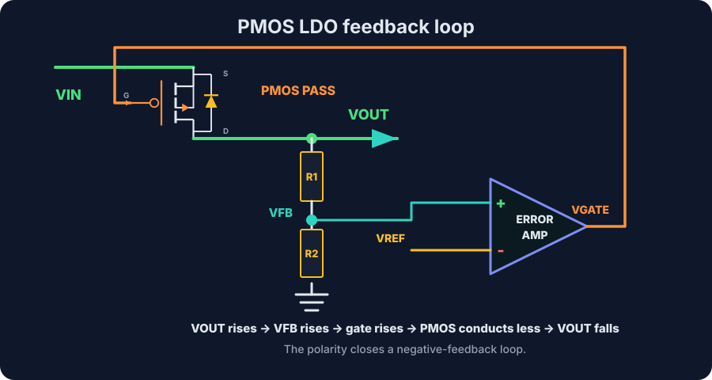

power-electronics-ldos-how-does-an-ldo-s-internal-feedback-loop-active / image_1
PMOS LDO feedback loop ldo_feedback_pmos

Prompt
A block diagram of an LDO's feedback loop. V_in connects to a PMOS pass transistor flowing to V_out. A voltage divider (R1 and R2) taps off V_out and feeds V_fb into the positive (+) input of an Error Amplifier. The negative (-) input is connected to a fixed V_ref. The output of the Error Amp connects to the PMOS gate. Callout text traces the logic: "If V_out ↑, then V_fb > V_ref, Gate Voltage ↑, Resistance ↑, V_out ↓".